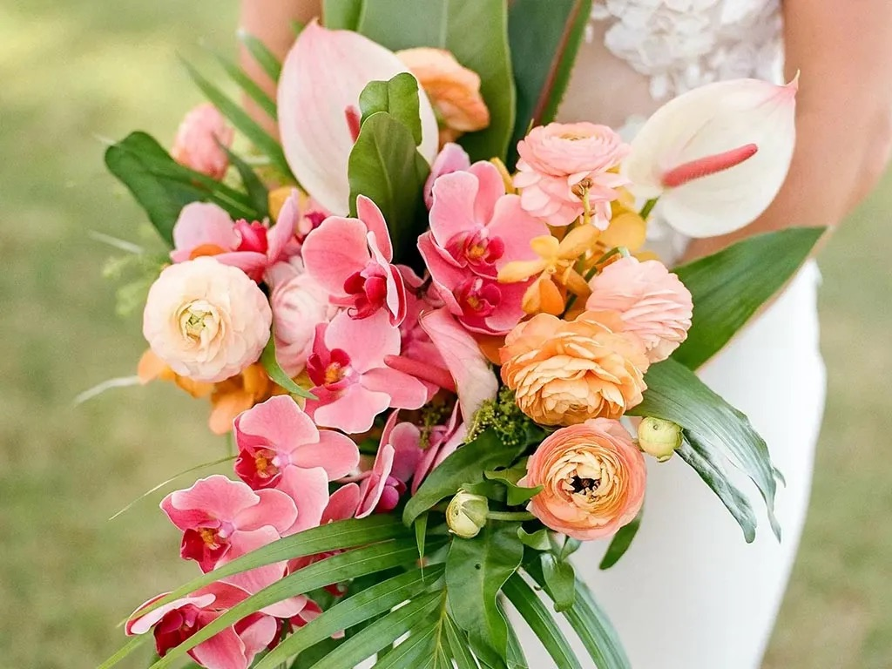

Flowers - dried and freshly cut

The best flowers to pick for your wedding day that will dry the best
- Roses
- Peonies
- Hydrangeas
- Daisies
- Pansies
- Delphiniums
- Larkspur
- Lavender
- Baby's Breath (Gypsophila)
- Snapdragons
- Strawflowers (Helichrysum)
- Statice
Process of drying the flowers
- First week
- Recieve the flowers
- Remove the leaves and any bad petals
- seperate the flowers
- start to dry the flowers out with heat
- once there is no mostiure
- cut the stems off
- take petals off
- place the flowers and the petals into the flower press
- Second week
- check on them every few days and switch out the paper to insure moisture doesn't stick
- Keep switching out the paper
- Third week week
- Change the paper one more time
- Recieve the frame
- Prep the frame
- Fourth week week
- Take the flowers out of the press
- Organize the flowers by color and by style
- Design the flowers out on the frame
- Glue the flowers out to the frame
- Ship the frame or drop it off
Watch this video to learn how to press flowers:
Back to Top